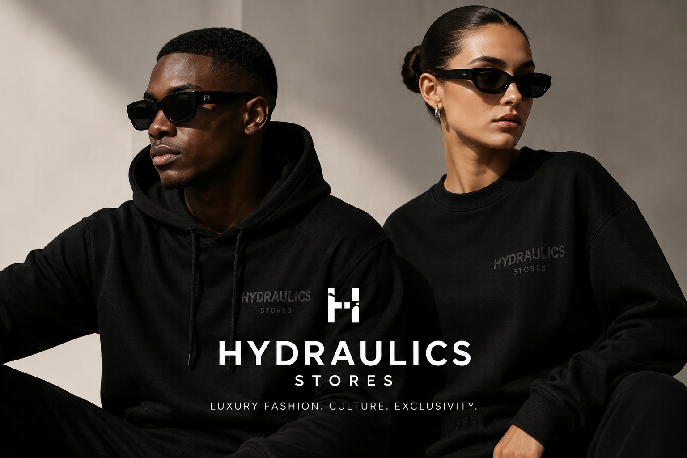
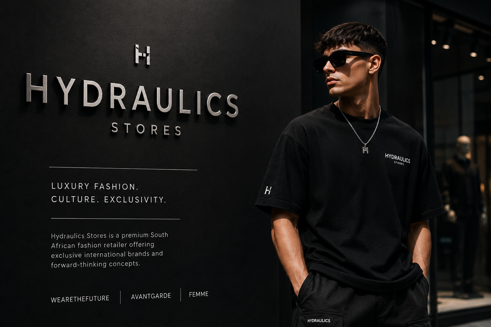

WEARETHEFUTURE
Luxury Streetwear
WEARETHEFUTURE is Hydraulics' streetwear-focused concept. It combines contemporary urban culture with high-end fashion and focuses on modern luxury streetwear.

Hydraulics is a South African luxury fashion retailer specialising in luxury streetwear, international designer fashion, clothing, footwear and accessories for men and women.
Founded in 1993, Hydraulics has developed a strong presence within the South African fashion industry and has established itself as a retailer focused on internationally recognised luxury brands and exclusive fashion.

Hydraulics was founded in 1993 and has spent more than three decades developing its position within the South African fashion market. The organisation describes itself as a pioneer in bringing international luxury fashion and streetwear to South African consumers.
Today, Hydraulics operates stores across major shopping destinations in South Africa while also providing customers with an online shopping platform.
WEARETHEFUTURE is Hydraulics' streetwear-focused concept. It combines contemporary urban culture with high-end fashion and focuses on modern luxury streetwear.
AVANTGARDE represents the organisation's luxury concept, featuring elevated international designer collections and statement fashion pieces.
FEMME is Hydraulics' dedicated women's fashion concept. It focuses on curated luxury fashion and accessories designed for the modern woman.
Discover the range of clothing, footwear and accessories available through Hydraulics Stores.
View Our Products